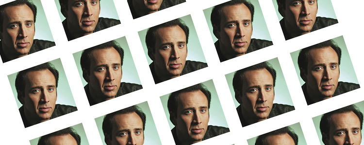

The purpose of Solitaire generally involves manipulating a layout of cards with a goal of sorting them in some manner. However it is possible to play the same games competitively (often a head to head race) and cooperatively.
Solitaire games typically involve dealing cards from a shuffled deck into a prescribed arrangement on a tabletop, from which the player attempts to reorder the deck by suit and rank through a series of moves transferring cards from one place to another under prescribed restrictions. Some games allow for the reshuffling of the deck(s), and/or the placement of cards into new or "empty" locations. In the most familiar, general form of Patience, the object of the game is to build up four blocks of cards going from ace to king in each suit, taking cards from the layout if they appear on the table.
Blackjack, also known as twenty-one, is the most widely played casino banking game in the world.[1] Blackjack is a comparing card game between a player and dealer, meaning that players compete against the dealer but not against any other players. It is played with one or more decks of 52 cards. The object of the game is to beat the dealer, which can be done in a number of ways:
- Get 21 points on the player's first two cards (called a blackjack), without a dealer blackjack;
- Reach a final score higher than the dealer without exceeding 21; or
- Let the dealer draw additional cards until his or her hand exceeds 21.
The player or players are dealt an initial two-card hand and add together the value of their cards. Face cards (kings, queens, and jacks) are counted as ten points. A player and the dealer can count their own ace as 1 point or 11 points. All other cards are counted as the numeric value shown on the card. After receiving their initial two cards, players have the option of getting a "hit", or taking an additional card. In a given round, the player or the dealer wins by having a score of 21 or by having the highest score that is less than 21. Scoring higher than 21 (called "busting" or "going bust") results in a loss.

Any deck of playing cards may be used, although there are special cards available, as shown in the picture above. The rules given here are for a standard deck of 52 cards, which are normally laid face down in four rows of 13 cards each. The two jokers may be included for a total of six rows of nine cards each.
In turn each player chooses two cards and turns them face up. If they are of the same rank and color (e.g. six of hearts and six of diamonds, queen of clubs and queen of spades, or both jokers, if used) then that player wins the pair and plays again. If they are not of the same rank and color, they are turned face down again and play passes to the player on the left. The game ends when the last pair has been picked up. The winner is the person with the most pairs, and there may be a tie for first place.
